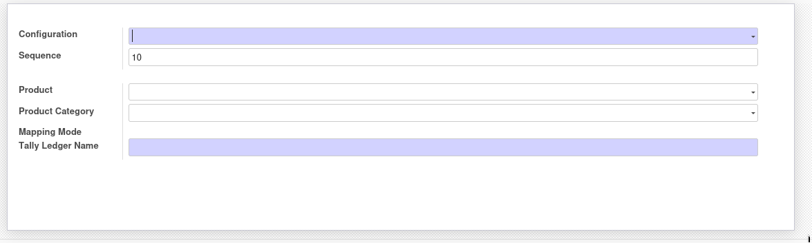
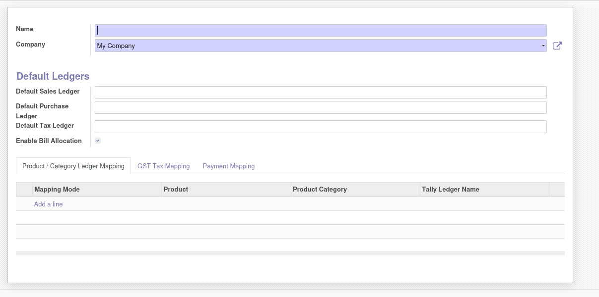

2. Configure Tally in Odoo
Accounting → Configuration → TallyOpen the Tally Configuration menu and create one configuration per company. This defines default ledgers and behaviour when mapping is not explicit.
2.1 Default ledgers
-
Default Sales Ledger — used when no product/category ledger is found for sales invoices.
-
Default Purchase Ledger — used when no mapping is found for vendor bills.
-
Default Tax Ledger — fallback ledger for GST when a specific mapping is missing.
-
Enable Bill Allocation — when enabled, payment vouchers contain BILLALLOCATIONS.LIST for automatic invoice settlement in Tally.
2.2 Product / category ledger mapping
In the Product / Category Ledger Mapping tab, define which Tally ledger should be used for each product or product category.
Product‑wise mapping
Category‑wise mapping
Fallback to default ledgers
Product / category ledger mapping

Route each product or category to the appropriate revenue or expense ledger in Tally.
Tally configuration screen

Define default ledgers, bill allocation and mapping rules per company.